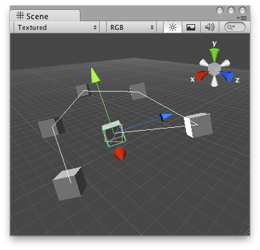

Handles.DrawAAPolyLine
public static void DrawAAPolyLine(params Vector3[] points);
public static void DrawAAPolyLine(float width,
params Vector3[] points);
public static void DrawAAPolyLine(float width,
int actualNumberOfPoints,
params Vector3[] points);
Parameters
| lineTex | The AA texture used for rendering. | |
| width | The width of the line. | |
| points | List of points to build the line from. |
Description 描述
Draw anti-aliased line specified with point array and width.
Note: Use HandleUtility.GetHandleSize where you might want to have constant screen-sized handles.
Note: To get an anti-aliased effect use a texture that is 1x2 pixels with one transparent white pixel and one opaque white pixel.

Anti-Aliased line in the Scene View.